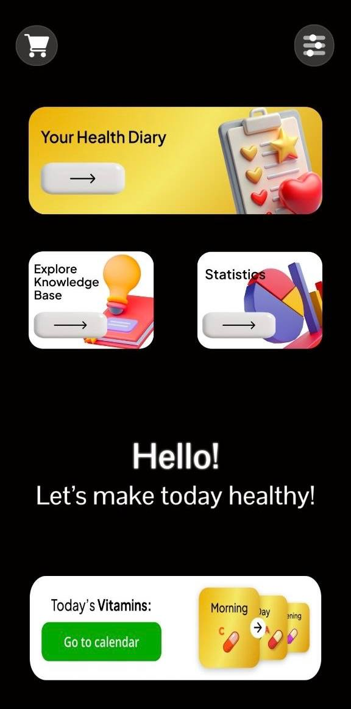
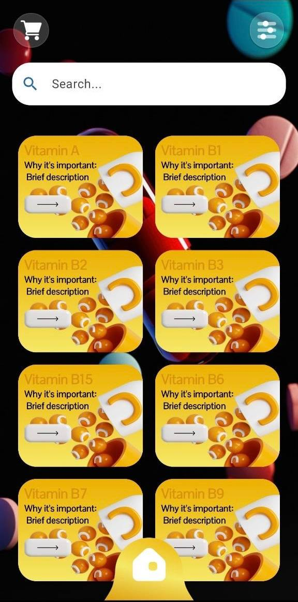
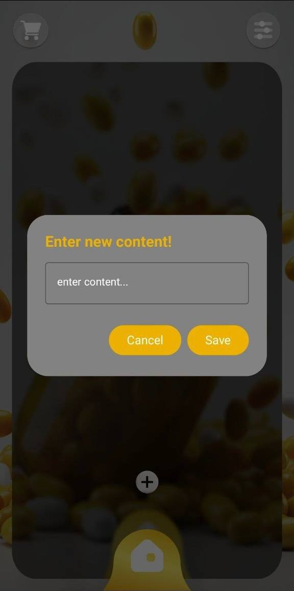
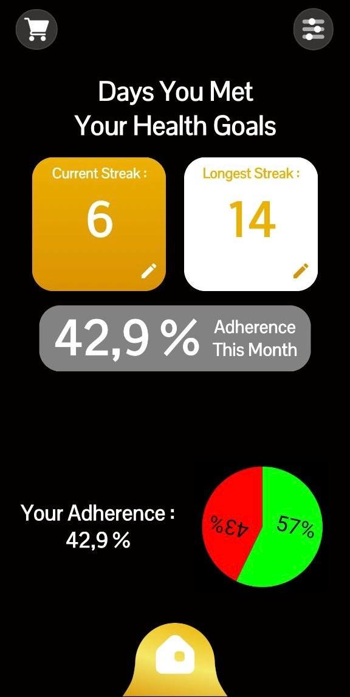
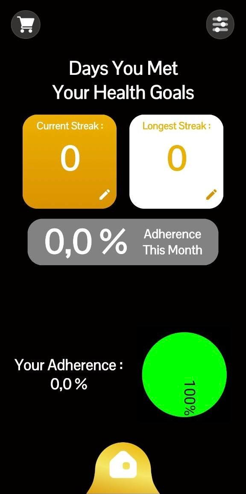

Track your vitamins, understand your routine, and improve your health consistency
Ecua Sport Track combines a health diary, vitamin knowledge base, simple daily planning, and adherence analytics into one mobile flow that helps users build stronger everyday habits.



Ecua Sport Track turns scattered supplement notes into one focused system for tracking, learning, and improving consistency
Core product features
Daily vitamin tracking
See what is planned for today and move into your calendar-based habit flow.
Health diary
Add personal notes and save useful health-related content in a simple modal-based interface.
Knowledge base
Search vitamins and open educational cards with quick entry points to detailed information.
Detailed vitamin pages
Read longer descriptions that turn the app into a personal reference tool.
Streak tracking
Monitor current streak, longest streak, and habit adherence in one analytics zone.
Visual adherence charts
Progress indicators make routine quality easier to understand at a glance.
From onboarding to long-term adherence
Entry point
The first screen clearly positions the app around vitamin tracking and health focus.
Home dashboard
Users immediately see where to learn, plan, and monitor their routine.
Diary actions
The app supports custom note-taking instead of only passive tracking.
Knowledge browsing
The search and card grid make learning feel accessible and fast.
Deep information
Vitamin pages add educational depth to the product experience.
Reference system
The educational layer encourages repeat usage beyond check-ins.
Adherence baseline
The app makes compliance and streak data easy to read.
Long-term results
The product supports growth from zero routine into measurable improvement.
Begin with a strong onboarding screen
The app opens with a supplement-driven visual intro that immediately frames the product around vitamins and health improvement.
Editorial app preview


Why the app feels useful every day
“It combines education and routine in one place, so it feels more practical than a simple reminder app.”
“The knowledge base makes it easy to look up vitamins while the tracking screens keep the habit part visible.”
“The adherence screens are what make it feel real. You can see whether your consistency is actually improving.”
Use Ecua Sport Track to build stronger vitamin habits
Track daily vitamins, save notes, explore nutrient information, and monitor adherence progress through one focused mobile routine.